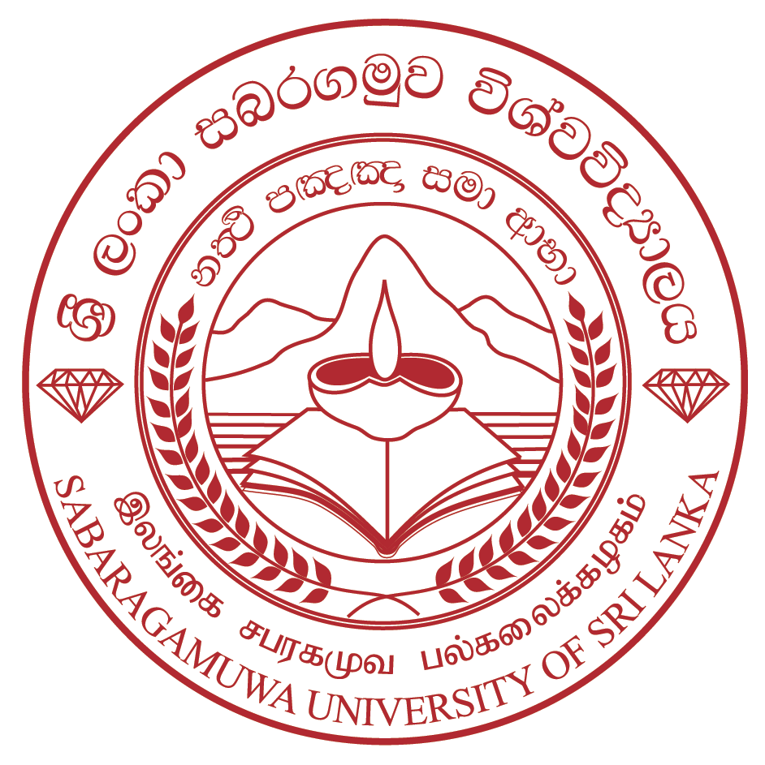

SABARAGAMUWA UNIVERSITY OF SRI LANKA

HISTORY OF SABARAGAMUWA UNIVERSITY
- 1991: Originated as the Sabaragamuwa Affiliated University College (SAUC).
- 1995: Established as an independent national university under the Universities Act.
- 1996: Formally inaugurated as the Sabaragamuwa University of Sri Lanka in Belihuloya.
- Present: Grown into a premier higher education institution with modern facilities and vibrant faculties.
AVAILABLE FACULTIES
- Faculty of Agricultural Sciences – කෘෂිකාර්මික විද්යා පීඨය
- Faculty of Applied Sciences – අනුප්රයුක්ත විද්යා පීඨය
- Faculty of Computing – පරිගණක පීඨය
- Faculty of Geomatics – භූ-දේශීය විද්යා පීඨය
- Faculty of Management Studies – කළමනාකරණ අධ්යයන පීඨය
- Faculty of Medicine – වෛද්ය පීඨය
- Faculty of Social Sciences and Languages – සමාජීය විද්යා හා භාෂා පීඨය
- Faculty of Technology – තාක්ෂණවේද පීඨය
- Faculty of Graduate Studies – පශ්චාත් උපාධි අධ්යයන පීඨය
GO TO OFFICIAL WEBSITE OF SABARAGAMUWA UNIVERSITY
GO TO HOME PAGE